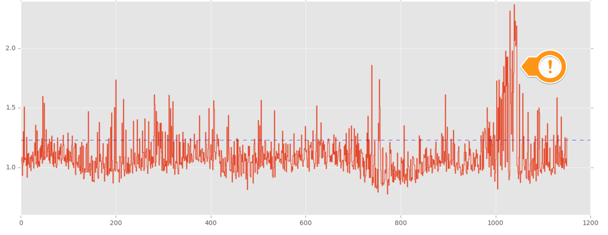

Detect unforeseen cascading problems.
A large video streaming company with millions of users was relentless in its quest to provide the best customer experience possible. They had good engineering practices in place to achieve that, which included unit tests, integration tests, and canary analysis before anything was deployed into production. They did everything they could to reduce the chances of an issue occuring in production, but they still had blind spots.
Canary tests only applied the code on a small subset of users. However, in production, the emergent behavior of hundreds of services interacting together with more code paths getting stress tested under heavy load surfaced unforseen problems.
Thus, they worked with Overseer to gain more visibility into their production environment.
Overseer worked with the domain experts to identify a core group of metrics that would help us reason about the behavior of a service in production. We then took this group of metrics and trained our algorithms to model the behavior of a few key streaming services.
The algorithms took as input 70 metrics and summarized the service's behavior into a new "meta-metric." Instead of watching each of the 70 metrics, they can now watch this new metric as an alternative.
Now that they have a simple way of reasoning about a service's behavior at any point in time without needing to watch a large number of metrics, the next step is to figure out how to extract useful signals out of it. The solution to this problem by alerting on this "meta-metric" itself. The thresholds were algorithmically set based on the training data.
The alerts caught serveral faults that the service owners were unaware of. Discovering these unknown-unknowns helped the service owners gain better visibility into how their code was behaving in production.
One notable issue that they caught was a cascading problem that could have impacted users. Since their infrastructure was built on a microservices architecture, individual services had downstream dependencies.
In this specific scenario, a bad jar for a service was deployed and was impacting the downstream services that depended on it. One of the key services they were monitoring was impacted, but the service owner was unaware of it. By modeling service behavior, they were able to detect that something was wrong. As a result, by surfacing this unknown-unknown, the service owner was able to take corrective action before users were impacted.
Overseer's approach to uncovering unknown-unknowns had a number of benefits including:
1. A simple way to watch a large number of metrics without having to tweak and maintain a lot of thresholds.
2. As a result of (1), Overseer was also able to mitigate the alert fatigue problem. In this case, Overseer only needed to alert on one metric, not 70 of them.
3. Because the "meta-metric" was constructed from an original input space of 70 metrics, the only way an alert will be generated is if many of the input metrics start to degrade. Thus, the alerts are cleaner, infrequent, and have fewer false positives. This benefit further mitigates alert fatigue.